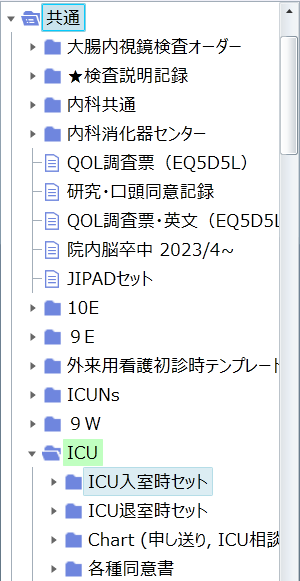
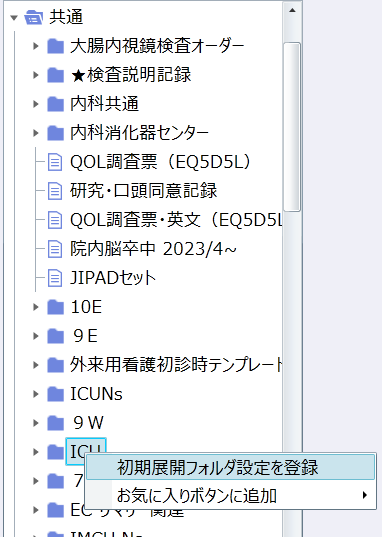

ICUで使用可能なオーダーセットの一覧です。
| 説明 | 使用時のコメント登録 | 変更時のコメント修正 | 退室時のコメント終了 | |
|---|---|---|---|---|
| ICU入室時セット | ||||
| ICU入室時セット | ICU入室時に全患者で展開 | |||
| 外科術後入室 | 詳細はこちら | |||
| ERからICU入室 | 詳細はこちら | |||
| 病棟からICU入室 | 詳細はこちら | |||
| bypass術後 | ||||
| ICU退室時セット | ||||
| ICU退室時セット | ICU退室時に全患者で展開 | |||
| ICU看取りToDo | 使用頻度：低 | |||
| 内科退室時 | 詳細はこちら | |||
| 外科退室時 | 詳細はこちら | |||
| Chart（申し送り, ICU相談） | ||||
| Daily chart | 日勤で1日の動きを記載 | |||
| ICU相談PHS | RRS対応をした際に必ず記載 | |||
| 夕回診記録 | 日→夜の申し送り内容に記載 | |||
| 当直医記録 | 夜勤が朝の申し送り前に記載 | |||
| 病棟→ICU申し送り | ICU退室時セットのセットパーツ | |||
| ICU→病棟ToNext | ICU入室時セットのセットパーツ | |||
| DIC診断基準 | 各DIC基準の確認に | |||
| 各種同意書 | ||||
| 入院時4点セット | 全患者で取得必須：詳細はこちら | |||
| 入院時4点セット（英語） | 外国人患者で取得必須 | |||
| 透析ブラッドアクセス | 緊急透析施行時に要取得 | |||
| 気管支鏡同意書 | 左記手技で取得必須（BALのみ） | |||
| 上部内視鏡 | 左記手技で取得必須 | |||
| 胸腔穿刺 | 左記手技で取得必須 | |||
| 腹腔穿刺 | 左記手技で取得必須 | |||
| 腰椎穿刺 | 左記手技で取得必須 | |||
| 経食道心エコー | ||||
| 気管切開 | ||||
| 口頭同意 | 同意書の短縮版を使う場合に展開 | |||
| ミニトラック | 左記手技で取得必須 | |||
| 点滴セット | ||||
| メイン輸液・脂肪製剤 | 必要 | 必要 | ||
| TPN | 必要 | 必要 | ||
| 昇圧薬 | 必要 | 終了 | ||
| 降圧薬 | 必要 | 終了 | ||
| 抗不整脈薬 | 必要 | 終了 | ||
| 鎮静薬 | 必要 | 終了 | ||
| 鎮痛薬 | 必要 | 終了 | ||
| 筋弛緩薬 | 必要 | |||
| 不眠・不穏時 | 必要 | 回数や投与量の上限変更時 | ||
| ストレス潰瘍/DVT予防 | ||||
| ステロイド | ||||
| 電解質補正 | ||||
| アルブミン | 速度コメントが必要 | |||
| ビタメジン/チアミン | ||||
| 利尿薬 | ||||
| 制吐剤・蠕動改善薬 | ||||
| 抗凝固療法 | ||||
| 抗てんかん薬 | ||||
| 抗菌薬 | ||||
| 輸血セット | ||||
| 血液セット | 速度コメントが必要 | 製剤の投与時間変更時 | ||
| 挿管・気切関連 | 必要 | |||
| 気管支鏡検査・喀痰吸引 | ||||
| 内服薬 | ||||
| 昇圧薬 | PRNは必要 | PRN：回数や投与量の上限変更時 | ||
| 降圧薬 | PRNは必要 | PRN：回数や投与量の上限変更時 | ||
| 内服鎮痛薬 | PRNは必要 | PRN：回数や投与量の上限変更時 | ||
| 緩下剤 | ||||
| 止痢薬・整腸剤 | ||||
| 睡眠薬・せん妄薬 | PRNは必要 | PRN：回数や投与量の上限変更時 | ||
| 漢方 | ||||
| 去痰薬 | ||||
| アルコール離脱予防 | ||||
| 電解質 | PRNは必要 | PRN：回数や投与量の上限変更時 | ||
| 制酸剤 | ||||
| バンコマイシン内服 | ||||
| バンコマイシン散高用量 | ||||
| リクシアナ | ||||
| アズノールうがい液 | ||||
| 呼吸器・HFNC・酸素 | ||||
| 酸素コメント | ||||
| SAT/SBT指示 | 必要 | 必要 | ||
| HFNC指示 | 必要 | 必要 | ||
| HFNC離脱 | 必要 | 必要 | ||
| NPPV（S/T） | 必要 | 必要 | ||
| NPPV（CPAP） | 必要 | 必要 | ||
| 呼吸器（PCV） | 必要 | 必要 | ||
| 呼吸器（VCV） | 必要 | |||
| 呼吸器（PSV） | 必要 | |||
| 呼吸器（ASV） | 必要 | 必要 | ||
| 呼吸器（I-ASV） | 必要 | 必要 | ||
| 呼吸器（トリロジー） | 必要 | 必要 | ||
| 食道内圧指示 | 必要 | |||
| HFNC離脱プロトコール | 必要 | |||
| インスリン指示 | ||||
| ICU DKA/HHSプロトコール | 必要 | メイン輸液のコメントのみ必要 | 終了 | |
| ICU スライディングスケール | 研修医は展開不可・今後削除予定 | 必要 | 終了 | |
| 一般床スライディングスケール | ||||
| ダイナミックスケール | 必要 | 終了 | ||
| グラルギン | ||||
| ログ追加分 | ||||
| 固定注射（スケールなし） | ||||
| 血糖測定のみ | 必要 | |||
| 経腸栄養 | ||||
| 手動プロトコール | 必要 | 要修正 | ||
| 12hプロトコール | 必要 | 要修正 | ||
| 24hプロトコール | 必要 | 要修正 | ||
| エレンタール | 必要 | |||
| アミノレバン | 必要 | |||
| GFO（コメント） | 必要 | |||
| リハ・嚥下・栄養依頼 | ||||
| 吸入・ネブ・点鼻・点眼 | ||||
| サルタノールコメント+オーダー | 必要 | |||
| PRNサルタノール | 必要 | |||
| 全吸入薬指示コメント | 必要 | |||
| ベネトリンネブ | 必要 | |||
| ヒアレイン点眼薬 | ||||
| デスモプレシン点鼻 | 必要 | |||
| アトロベント | 必要 | |||
| フルティフォーム（限定薬） | 必要 | |||
| トブラマイシン吸入 | 必要 | |||
| 軟膏セット | ||||
| 貼付剤（ビソノ、ロキソ） | ||||
| ケアラウンド・退室後訪問 | ||||
| 代行入力依頼セット | ||||
| 採血+尿+胸部XP | 患者の平日標準セット | |||
| 採血+尿+胸腹部XP | ||||
| 採血+尿 | ||||
| 緊急採血+尿+胸部XP | 患者の日祝日標準セット | |||
| 緊急採血+尿+胸腹部XP | ||||
| 緊急採血+尿 | ||||
| バンコマイシン | ||||
| COVID-19 PCR保険 | ||||
| D-Bil | ||||
| 脂質セット | ||||
| 心筋セット | ||||
| APTT6時間毎 | ||||
| 貧血セット | ||||
| 輸血検査 | ||||
| β-Dグルカン | ||||
| アスペルギルス抗原 | ||||
| サイトメガロ抗原 | ||||
| プロカルシトニン | ||||
| 甲状腺セット | ||||
| SDU呼吸ケアチーム加算 | ||||
| 蓄尿セット | ||||
| 8時間蓄尿 | 必要 | |||
| 24時間蓄尿 | 必要 | |||
| その他 | ||||
| 鼻血セット | ||||
| 病理解剖セット | 必要 | |||
| レントゲン_PICC/CV | ||||
| 膀胱還流指示 | 必要 | |||
| 膀胱内圧測定 | ||||
| レポートサインNew | ICU入室時セットのパーツ | 必要 | 必要 | |
| NP同意書 | ||||
制作：ICU 関谷